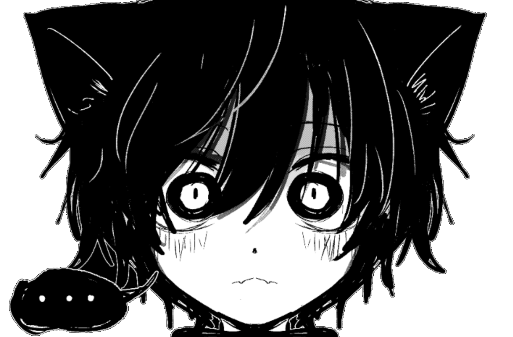

haii im catboy/anatoxin [it/its]. im an aspie purrogrammer n the resident "thing" of our system :3 i looove tedious thingz and tech stuff, [but im really new to all of this stuff so be nice1!11!1]. im the smartest 12 year old ever, ok? ^^
